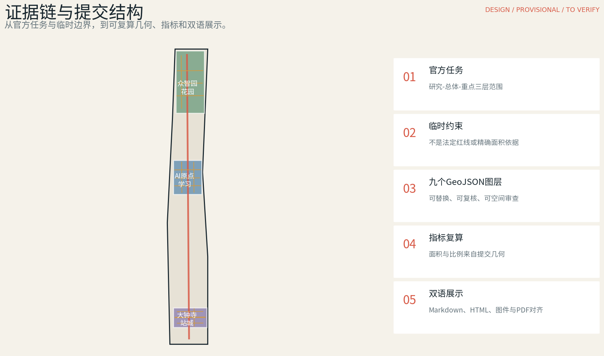
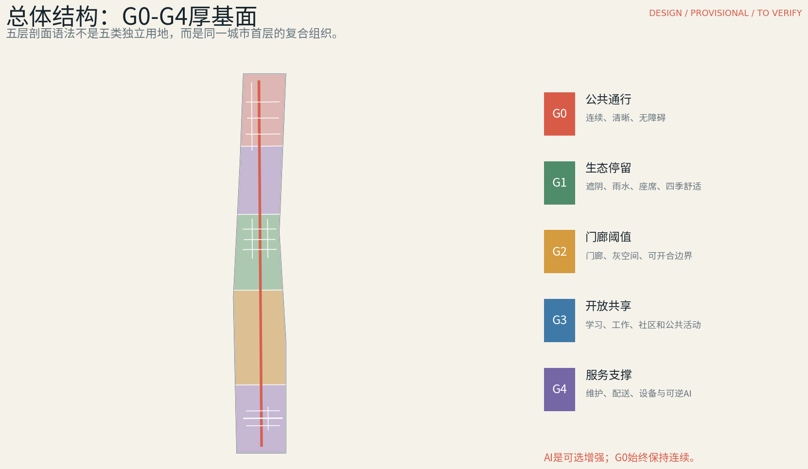
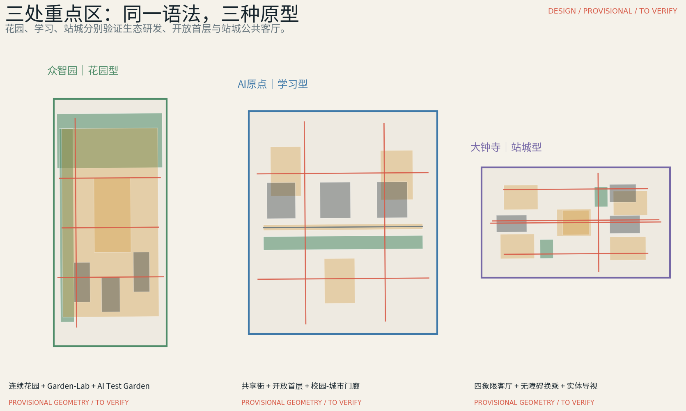
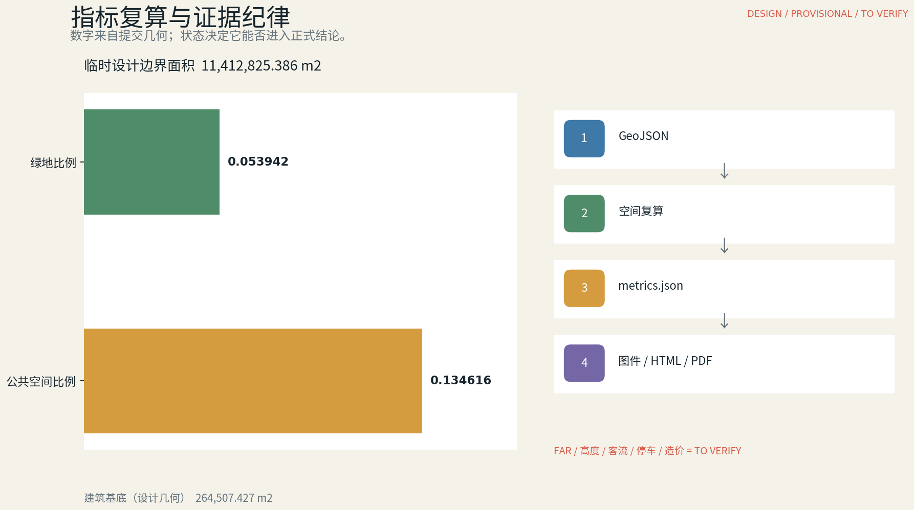

京张厚基面 / Jingzhang Thick Ground
以G0-G4厚基面语法连接京张遗产、三处重点片区、气候适应与日常公共生活；AI作为可逆增强层，所有概念几何保留精度警示并可复算。
京张厚基面 / Jingzhang Thick Ground
设计依据与资料清单
本 formal 方案以北京市规划和自然资源委员会海淀分局发布的《百年京张AI创新带城市设计国际方案征集资格预审公告》为第一依据，并以 brief/site-package/ 中经维护者登记的临时粗略边界、重点区域、枚举、指标和来源清单为机器可读依据。AI agent 在生成方案前必须读取 design_brief.json、allowed_design_space.json、sources.json、enums/、ranges/、schemas/、data/source_registry.json 和 data/processed/agent_fact_pack.md，并用 project_scope_summary.csv、agent_task_requirements.csv、source_use_matrix.csv、missing_data_checklist.csv 建立任务、范围、资料用途和缺口清单。所有设计判断都要拆分为可追溯来源、可复算指标、可校验图层和可人工复核假设。公告要求方案达到控制性详细规划的城市设计深度和规划综合实施方案的城市设计深度，因此文本叙述不能替代 GeoJSON、指标表、A3 文册、A0 展板和 HTML 电子展示成果。
方案不是独立愿景文本，而是从公告、面向智能体任务书和场地资料出发组织成果；本节只把最关键依据放在判断旁边 来源 来源 深度。完整来源和标准覆盖分别保存在 sources.json、standard_matrix.json 与 design_depth_matrix.json，不在正文重复机器索引。
资料登记表的使用边界如下 来源：
- data/source_registry.json 登记公开、清权与临时资料的用途边界。
- 当前登记摘要：formal 可用资料 7 条，背景资料 1 条，provisional-only 资料 1 条。
- agent 不得把 background_only 或 provisional_only 资料升级为 official boundary、法定控规、正式评分依据或政府实施承诺。
data/processed/agent_fact_pack.md 是本方案的阅读导航层，不是新的权威来源 来源。它帮助 agent 把三层范围、三处重点区、公告任务、agent.1-agent.6、资料可用性和缺资料事项组织成可读方案；事实判断仍需回到已登记的原始材料 来源 来源，完整来源关系由 sources.json 保存。

本提交包在官方 SITE_BOUNDARY 或三处 KEY_AREA 尚未取得时，使用 brief/site-package/geometry/provisional_boundaries.geojson 生成临时 formal 几何。提交包中的 geometry/site_boundary.geojson 与 geometry/key_areas.geojson 均标注为 provisional_constraint、official_boundary=false，只能用于方案生成、自检、可视化和设计讨论，不能作为 official redline、审批依据、精确面积依据或法定控制结论。该组织方数据缺口本身不阻断内容评分；替换 official polygons 后，site boundary、key areas、land use、roads、green space、public space、buildings、phasing 和 metrics 均需重算。
本次正式方案的可评分状态为：临时边界，保留精度警示并待正式数据发布后复算；不阻断内容评分。因此，正文中的空间结构、场景、项目和指标均按“可讨论、可复核、可替换官方边界后重算”的原则写入；当官方边界和重点区 polygon 更新后，agent 必须重新运行空间复核、自检和图纸/HTML生成，不能只替换单个文件。
边界解释可回到总体范围图层和面积复算 空间数据 指标。三处重点区则由独立图层和数量指标核对 空间数据 指标。这意味着读者可以从正文进入证据，但不必先读一串机器编号。
三层范围工作框架
方案按照公告确定的三个层次组织工作：统筹研究范围关注 43.6 平方公里的AI产业生态、战略定位、创新链和未来城市形态；总体设计范围关注 11.4 平方公里京张遗址公园周边 1-2 公里城市地区和产业区，要求形成城市更新总体框架、产业空间布局、交通市政支撑和城市风貌控制；重点区域范围关注 368.4 公顷三处详细设计地区，要求明确功能业态、建筑规模、拆改留分类、公共空间连通和交通组织。三层范围在 compliance_matrix.json 中逐条映射，保证公告 1.3、1.4、1.5 与 agent.1-agent.6 的必选任务都有章节、图层、指标、图纸和 HTML 证据。
三层工作框架的深度项由 深度 和 深度 约束，空间证据以 空间数据 与 空间数据 为准，任务依据以 标准 为准，范围索引以 来源 中 project_scope_summary.csv 的三层范围表为导航。

三层工作不是互相割裂的图纸集合。统筹研究决定产业链和城市形态判断，总体设计把判断落实到更新项目、空间结构和设施承载，重点区域详细设计验证具体地块、建筑、交通、公共空间和AI应用场景的可实施性。agent 生成方案时必须先锁定当前提交采用的 official 或 provisional 边界和约束，再生成用地、建筑、道路、绿地、公共空间、分期和AI服务节点，最后从这些图层复算指标并在正文解释哪些结论仍受 provisional boundary 限制。任何无法从结构化数据复算的面积、比例、规模或项目数量，不得写入正式结论。
本方案的总体概念是“京张厚基面”：以京张遗址公园为历史与公共空间主轴，以众智园、北京AI原点社区、大钟寺三处重点片区为花园型、学习型、站城型原型，把公共通行、生态停留、门廊阈值、开放首层与服务后场叠合成G0-G4连续语法。它不是额外画出的新红线，而是把公告中的三层范围转译为一种可复用的首层更新方法；AI仅作为G4中的可逆增强层，不能取代G0的无障碍通行、静态导视、人工服务和基本公共使用。
| 层级 | 设计问题 | 方案回答 | 数据落点 |
|---|---|---|---|
| 统筹研究范围 | AI产业生态和未来城市形态如何组织 | 建立“高校策源-开源协作-企业转化-公共体验-国际传播”的创新链，并以厚基面承载日常交往 | compliance_matrix.json、standard_matrix.json |
| 总体设计范围 | 产业空间、城市更新、交通市政和风貌如何落图 | 以G0-G4网络联动用地、建筑、道路、绿地、公共空间和分期图层 | 空间数据、空间数据 |
| 重点区域范围 | 三处片区如何达到详细设计深度 | 分别形成花园、学习、站城三种原型及其AI场景和实施依赖 | 空间数据、空间数据、空间数据 |
统筹研究范围产业与未来城市研究
统筹研究范围的核心任务是构建世界级 AI 创新生态体系。方案应梳理海淀高校院所、头部企业、算力算法数据要素、孵化平台、上市企业、独角兽和科技服务资源，提出AI创新链、产业链、人才链和城市服务链的空间协同框架。命名方案和 logo 设计应服务于“百年京张文化带、都市AI生活体验带、AI融合创新带”的整体辨识度，不能只停留在口号，应说明与产业生态、公共空间和文化资源的关联。面向智能体任务书还要求回应“五大功能”和“三区两翼”协同，形成可继续深化的命名系统、视觉识别、总体空间结构图、场景开放和运营机制；本节必须用 来源 与 标准 标注这些要求来自 agent 开源征集任务，而不是法定规划控制。
统筹研究并不新增伪精确红线；它通过 标准 要求的城市风貌、公共空间和建筑布局统筹，回接 空间数据、空间数据 与 深度，说明产业策略最终要落到可见、可复核的空间结构。
未来城市形态研究应回答人工智能如何改变工作、生活、社交、学习、交通和公共服务。方案应把AI交通系统、连续绿色空间、创新服务设施和国际化生活工作氛围落实为可定位的功能区、节点、廊道和场景，而不是泛泛描述技术愿景。agent 应把产业战略指标、AI创新指数、人才密度、空间供给类型和AI+垂直应用重点区域写入指标体系，并标明哪些是官方、哪些是设计建议、哪些仍待正式数据校准。若提出全球AI创新活动、开发者社区、开放场景或朝圣路线，应写为“概念建议/参考方案/可供专业团队深化研究”，不得写成已经确定的政府活动或实施安排。
品牌与 Logo 方向成果（agent.1）
标志以京张铁路“双轨”记忆为骨架，以 G0-G4 五条色带表达从公共通行到服务支撑的厚基面。中文标准组合为“京张厚基面”，英文标准组合为“JINGZHANG THICK GROUND”，双语组合下设“HERITAGE · LEARNING · STATION-CITY”。这是投稿方案的概念识别成果，不是政府标志，也不替代法定标识。
| 项目 | 规范 | 边界 |
|---|---|---|
| 色彩 | G0 #D85B48；G1 #4F8C69；G2 #D49B3F；G3 #3F79A8；G4 #7567A6；墨色 #17252D；纸色 #F5F2EA | 不得把五色解释为法定用地分区 |
| 单色/小尺寸 | 仅黑白；符号不小于16px/6mm；完整锁定组合不小于96px/34mm | 更小时仅用符号或纯文字 |
| 字体与许可 | 本地 Noto Sans CJK SC 子集；SIL Open Font License 1.1 | 来源、许可和派生文件已登记 |
| 错误用法 | 禁止拉伸、旋转、发光、透视变形、渐变和未经许可的伙伴联名 | 合作标识须另行授权 |
| 文化导视边界 | 品牌识别方案及其活动；遗产导视承载历史解释和法定信息 | 不得覆盖文保牌、交通标识或应急导向 |
区域创新协同矩阵（概念建议）
| 区域 | 主题与要素流 | 京张空间接口 | 年度机制 | 拟议角色 | 验证指标 |
|---|---|---|---|---|---|
| 北纬社区 | 社区AI、适老、青少年学习；居民需求与服务反馈 | 原点开放门廊、无App服务台 | 共创周、季度无障碍走查 | 社区联络、大学协作、无障碍评审 | 参与多样性、问题关闭率、非数字完成率 |
| 未来科学城 | 基础研究转化；研究者、原型与共享设施 | Garden-Lab、Test Garden | 开源城市周、联合原型评审 | 研究联络、场地运营、安全评审 | 可复现原型、受监督时数、公共价值发现 |
| 怀柔科学城 | 科学仪器与研究文化；方法、展览和访问团队 | 再生创新展厅、百年时标 | 研究文化驻留与公众演示 | 策展、研究联络、公共项目管理 | 访问量、可复用学习模块、理解度反馈 |
| 经开区 | 机器人与制造验证；设备、供应商和安全协议 | 低速配送湾、G4服务接口 | 物流互操作安全演练 | 企业联络、场地运营、安全与数据评审 | 人工接管、协议问题关闭、非AI连续性 |
| 京津冀 | 遗产、人才和产业协作；访客、内容与转介 | 大钟寺城市交换厅、双语实体地图 | Urban AI Forum、公共巡展 | 区域召集、主办场地、翻译与评估 | 跨城参与、转介跟进、共享成果、访客理解度 |
承诺边界：以上均为可供相关方协商的概念建议，不声称任何地区、机构、政府部门或企业已同意合作。

六个全球参照不用于复制形态或导入未经核验的指标，而用于比较“创新生态如何落到城市基面”：22@ Barcelona提供产业遗产更新与混合城市的参照；one-north说明研发、创业与试验平台的组合；London Knowledge Quarter强调跨机构伙伴网络；Kendall Square提示研究锚点、轨道和日常服务的协同；High Tech Campus Eindhoven强调共享研发设施与社交枢纽；Jurong Innovation District强调人、货、数据与创意的分层流动。京张厚基面从中提取“开放界面、共享设施、公共生活、可监管测试、长期运营”五项方法，但所有空间控制仍回到北京项目资料和本地验证。
| 国际参照 | 可借鉴机制 | 京张转译 | 来源 |
|---|---|---|---|
| 22@ Barcelona | 生产性遗产更新、混合用地、知识机构嵌入 | 保留京张历史叙事，同时优先修补首层和公共空间 | 来源 |
| one-north Singapore | 研发、创业、孵化与test-bedding协同 | 众智园AI Test Garden和共享研发首层 | 来源 |
| London Knowledge Quarter | 轨道周边跨机构知识伙伴网络 | 京张沿线高校、文化、企业与社区的步行联系 | 来源 |
| Kendall Square | 研究锚点、轨道、开放空间和日常服务叠合 | AI原点学习型厚基面与开放门廊 | 来源 |
| High Tech Campus Eindhoven | 共享设施与社交枢纽支撑开放创新 | Garden-Lab界面、共享院落和午间交往 | 来源 |
| Jurong Innovation District | 人、货、数据与创意分层组织 | G0公共通行与G4服务/物流安全分离 | 来源 |
总体设计范围城市更新与控规深度城市设计
总体设计范围要求达到控制性详细规划的城市设计深度。方案必须提出城市更新总体空间结构、低效空间识别、更新项目清单、实施政策建议、产业功能比例、空间组织模式、建筑总规模和综合承载能力评估。geometry/land_use.geojson 应完整覆盖设计边界且无重叠，geometry/buildings.geojson 应表达更新建筑基底或保留建筑基底，geometry/roads.geojson 应表达微循环、慢行和轨道接驳关系，metrics.json 应复算核心面积、比例和图层数量。
本节按照 标准 把控规深度内容拆成可审查对象：空间数据 表达用地结构，空间数据 表达建筑基底，空间数据 表达交通组织，指标 用于复核建筑基底面积，深度 与 深度 约束成果深度。
总体设计还必须支撑交通、轨道、市政和配套设施。方案应围绕轨道站点一体化、道路微循环、非机动车停放、停车供给、创新服务平台、人才生活服务、新型基础设施、分布式能源和端侧算力提出空间布局和实施路径。涉及建筑高度、开发强度、道路红线、退线和设施标准的内容，若尚无官方控制条件，应写为“待正式控规条件确认”，不得以 agent 推测值冒充审定指标。
重点区域详细设计
重点区域详细设计是必选项。众智园AI自主创新加速区应围绕国家人工智能平台、全栈自主创新、标准制定、安全治理、产业展示、对外交通、清河文化、低碳绿色创新交往环境和绿色空间AI场景提出详细方案。北京AI原点社区应围绕近校创新、成果孵化转化、人才特区、开源体系、品牌活动、建筑拆改留、成果展示发布、居住生活配套、校区园区慢行联系和轨道站点一体化提出详细方案。大钟寺AI产业聚集区应围绕领军企业、智能体、智能终端、内容消费、数据要素、数字资产、商业服务、规划绿地复合利用、大钟寺站一体化和路口四象限步行连通提出详细方案。
三处重点区域详细设计必须引用 空间数据、空间数据、空间数据，并由 深度 检查是否达到规划综合实施方案深度。若只描述“打造示范区”而没有功能、建筑、交通、公共空间和实施项目证据，应被视为未完成。

三处重点区域必须在 geometry/key_areas.geojson 中出现。若仓库已提供 official polygons，应作为 official_constraint 使用；若 official polygons 缺失，可暂用 provisional_constraint，但正文、HTML、sources、assumptions 和 self_check 必须说明它不能作为正式评分或审批依据。compliance_matrix.json 应分别覆盖公告 1.5.3.1、1.5.3.2、1.5.3.3。设计表达应包含功能业态、建筑规模、建筑形态、拆改留分类、公共空间系统、交通组织、慢行连通和实施项目。HTML 页面应能切换查看三处重点区域，A3 文册和 A0 展板应至少包含重点片区总图、局部详图和指标说明。
| 重点片区 | 设计定位 | 空间动作 | AI产业与运营场景 | 证据引用 |
|---|---|---|---|---|
| 众智园AI自主创新加速区 | 花园型厚基面 | 以连续花园、蓝绿舒适步行和Garden-Lab界面连接研发建筑；AI Test Garden采用低扰动、可逆测试 | 模型与机器人安全测试、标准治理展示、低碳环境监测 | 空间数据、深度 |
| 北京AI原点社区 | 学习型厚基面 | 用共享街、开放首层、学习院落与校园-城市门廊缝合研发、创业、社区日常 | 开源协作、成果发布、夜间学习、企业服务协同 | 空间数据、来源 |
| 大钟寺AI产业聚集区 | 站城型厚基面 | 用四象限城市客厅组织到达、等候、会面、社区服务和商业界面，形成全天候换乘基面 | 无障碍换乘、实体与智能导视、公共服务分流、合规路演 | 空间数据、指标 |
AI 创新生态、人才画像与 AI+ 场景
方案应建立面向AI人才和企业的空间需求画像，覆盖研发办公、开源协作、成果发布、企业服务、人才居住、社交学习、消费生活、运动休闲和国际交往。AI+场景应围绕公告提出的交通、服务、消费、医疗、教育、法律、生活服务等方向，形成产业发展场景和AI赋能城市功能场景。每个场景应说明服务对象、空间位置、数据来源、隐私边界、人工复核机制和运营主体。
AI 场景必须落到空间和治理边界：公共空间场景引用 空间数据，慢行与交通场景引用 空间数据，开放空间场景引用 空间数据 和 指标、指标。这些引用让评审者知道场景不是口号，而是位于具体图层和指标中的设计对象。面向智能体任务书要求不少于10张AI场景卡、不少于3个产业测试验证场景和不少于5类用户画像；本方案已将12张场景卡、5类画像、隐私边界、人工复核和运营责任分别写入正文、HTML、A3/A0 和合规矩阵。
| 用户画像 | 典型需求 | 空间响应 | 自检边界 |
|---|---|---|---|
| 青年研究者 | 安静工作、跨团队交流、午间恢复 | 众智园Garden-Lab、共享院落、连续遮阴步道 | 研究资料和个人轨迹不进入公共系统 |
| 初创工程师/创业者 | 低成本协作、测试、发布和企业服务 | 原点共享街、开放首层、夜间学习与路演门廊 | 算力、数据和企业标识需独立授权 |
| 老年居民 | 连续无障碍、频繁休息、人工帮助、冬季向阳 | 大钟寺城市交换厅、口袋客厅、无App导视 | 不强制数字身份，不以画像进行商业推荐 |
| 带儿童的社区家庭 | 安全穿行、可见看护、四季活动与基础服务 | 花园停留带、共享院落、低车速街角 | 儿童数据最小化，测试区与游戏区物理分离 |
| 首次到访者 | 清晰到达、换乘、文化识别和多语帮助 | 百年时标、原点开放门廊、大钟寺实体地图 | 导览需提供静态与人工后备，不依赖App |
| 场景卡 | 空间载体 | 设计说明 |
|---|---|---|
| SCN-01 AI Test Garden | 众智园 | 公共花园与低扰动测试共存；预约、围合、人工监督、急停和退出机制为前置条件 |
| SCN-02 研发午间共享院 | 众智园 | 通过遮阴、座席和开放首层连接团队，AI仅用于可关闭的空间预约与环境提示 |
| SCN-03 蓝绿舒适步行 | 众智园-京张遗址公园 | 结合雨水花园、无障碍路径和季节维护，用低侵入感知辅助环境评估 |
| SCN-04 Origin Shared Street | AI原点 | 研发、创业、学习和社区活动在傍晚切换，保留实体导视和人工服务基线 |
| SCN-05 夜间学习街角 | AI原点 | 开放首层延长学习与社交时段；照明、噪声、消防和邻里协议必须同步验证 |
| SCN-06 校园-城市开放门廊 | AI原点 | 在权属清楚的前提下形成可开合阈值，AI用于信息发布而不代替门卫和无障碍设施 |
| SCN-07 低速配送服务湾 | 三处重点片区 | 机器人和骑手在G4服务带完成交接，与G0人行基线分离并保留人工接管 |
| SCN-08 4Q Accessible Transfer | 大钟寺 | 四象限城市客厅组织无障碍到达、等候、会面和换乘，智能导视必须可解释可退出 |
| SCN-09 站前会面客厅 | 大钟寺 | 实体地图、连续雨棚、座席和人工服务先行，AI仅增强会面与路径提示 |
| SCN-10 存量商业夜间客厅 | 大钟寺 | 通过首层界面改造提升夜间公共性，并设置噪声、消防、保安和关停规则 |
| SCN-11 再生建筑创新展厅 | 大钟寺/原点 | 适应性再利用承载产业展示和公众教育，地块结论待建筑状况与权属核验 |
| SCN-12 无App京张文化步行 | 京张遗址公园 | 百年时标、实体导视和人工讲解构成基线，多语AI导览作为可选增强 |
agent 生成的AI治理建议必须遵守数据最小化、公开来源、可解释和人工复核原则。城市智能体可以辅助识别慢行断点、公共空间热力、设施维护、企业服务需求和活动安全风险，但不能替代规划审批、不能输出未经授权的个人画像、不能声称获得官方实施承诺。所有AI场景节点应进入结构化图层或合规矩阵，便于评审者看到它们与产业、空间和公共利益之间的关系。
用地、建筑规模与拆改留方案
用地方案应依据国土空间调查、规划、用途管制分类等公开标准表达，形成完整、闭合、无缝的用地分区。建筑方案应区分保留、改造、更新、新建或待确认对象，明确建筑基底、功能、规模、风貌、屋顶、体量和高度控制的建议层级。若缺少现状建筑、权属、控规和工程条件，方案只能提出方法和待校准清单，不能编造拆改留结论。
用地分类依据 标准，建筑高度、体量、界面和风貌控制由 深度 管理，拆改留方法由 深度 管理。用地和建筑的主要证据是 空间数据、空间数据 和 指标。
建筑规模和强度指标必须与 metrics.json 和图层一致。若总建筑规模、容积率、建筑高度、建筑密度、绿地率、退线和建筑控制线缺少官方条件，应统一使用 status=unknown，并在 reason / assumptions 中说明待补条件、当前假设和正式数据到位后的复算路径，不得用固定数值制造精确感。A3 文册应给出更新项目清单和指标复核表，A0 展板应把关键空间结构和重点片区表达清楚，HTML 页面应提供指标和图层联动查看。
交通、轨道、市政与公共服务设施
交通方案应回应公告对轨道站点一体化、道路微循环、慢行断点、对外交通、停车、非机动车停放和绿色交通系统的要求。重点应覆盖北五环、京张遗址公园跨环路节点、五道口、清华东路西口、大钟寺站及重点企业周边交通联系。道路和慢行图层应保持在提交边界内，并与公共空间、绿地、产业节点和重点片区相互校核；若提交边界为 provisional，交通结论也只能作为临时设计讨论。
交通和市政专业深度分别由 深度 与 深度 约束；图层证据引用 空间数据、空间数据 和 空间数据。当道路红线、管线、消防和市政条件缺失时，应通过 assumptions 说明待补，而不是把策略写成审定条件。

市政和公共服务设施应覆盖AI产业服务设施、创新服务平台、人才生活服务设施、新型基础设施、分布式能源、端侧算力和传统市政设施融合。方案应说明设施标准、空间布局、服务半径、运营模式和分期实施逻辑。缺少管线、能源、排水、防洪、消防等工程资料时，应列为正式深化前置条件。
蓝绿空间、公共空间与城市风貌
蓝绿空间方案应以京张遗址公园活力带为骨架，统筹清河、小月河、周边高校、企业、社区出行需求，提出南北贯通、东西连通的步道、骑行道和绿色空间体系。方案应识别慢行断点、上跨环路节点、公园南端和北端景观节点，提出停车、体育、创新交往、科技测试、应用展示和公共服务复合利用策略。
蓝绿公共空间由设计深度项和绿地、公共空间图层共同校核 深度 空间数据 空间数据。绿地与公共空间比例在正文解释设计意义，完整复算保存在 metrics.json；城市风貌、公共空间和建筑控制的统筹则回到专业标准矩阵 标准。
城市风貌方案应融合京张铁路历史文化、中关村创新文化和AI创新文化，利用清华园火车站、北影等文化资源，提出城市基调、建筑风貌、屋顶形态、体量、界面和公共艺术引导。agent 还应提出导视标识、文化符号、国际传播叙事、AI朝圣地标、贡献墙或荣誉展示体系，但所有品牌、字体、图像、肖像和企业标识都必须有清权来源。风貌控制应分清官方管控、设计建议和待确认条件，严禁在没有文保或控规依据时给出伪精确控制线。
更新项目清单、实施政策与分期计划
实施方案应形成可审查的更新项目清单，说明项目位置、类型、功能、责任主体、依赖条件、实施阶段、风险和评估指标。政策建议应覆盖城市更新统筹实施、空间供给、运营机制、产业服务、公共参与、数据治理和产权协同。geometry/phasing.geojson 应表达分期范围，compliance_matrix.json 应把每个任务与分期和图纸挂接。
项目清单和分期深度由 深度 与 深度 管理，分期空间证据为 空间数据。如果没有权属、资金、实施主体和审批路径，方案必须把它写成实施风险，而不是承诺落地。
| 项目编号 | 项目名称 | 类型 | 主要依赖 | 证据引用 |
|---|---|---|---|---|
| JZ-01 | 京张遗址公园慢行断点缝合 | 公共空间/交通 | 道路红线、桥下空间、交通组织复核 | 空间数据 |
| JZ-02 | 众智园清河创新界面 | 蓝绿空间/产业展示 | 河道蓝线、生态和防洪条件 | 空间数据 |
| JZ-03 | 原点社区近校成果转化街 | 城市更新/产业服务 | 校区边界、权属、首层业态 | 空间数据 |
| JZ-04 | 大钟寺站四象限步行连通 | 轨道一体化/慢行 | 轨道站点、道路交叉口、市政管线 | 空间数据 |
| JZ-05 | AI公共服务与端侧算力节点 | 新基建/公共服务 | 能源、算力、安全和运营主体 | 空间数据 |
| JZ-06 | 全球AI活动周公共路线 | 运营/品牌 | 公共空间许可、活动安全、版权清权 | 空间数据 |
分期应与 100 天征集设计周期形成区分：征集周期是提交成果的时间要求，实施分期是城市更新和项目建设的推进路径。方案应提出近期试点、中期更新和长期治理框架，并标明哪些内容可先以轻量设施、运营活动和服务平台启动，哪些必须等待正式控规、市政、交通和权属条件确认。对于年度活动体系、开发者社区运营、场景开放日、公共体验路线和国际传播机制，正文应说明运营对象、频率、责任边界、转化路径和风险，不得只写宣传口号。
年度活动与长期运营表（agent.6，概念建议）
| 活动 | 建议频率/空间 | 拟议责任角色 | 许可、安全与数据前置 | 非AI后备/社区机制 | 传播与转化 | 评估指标 |
|---|---|---|---|---|---|---|
| 春季开源城市周 | 年度；原点共享街 | 项目召集、场地运营、社区联络、代码评审 | 场地/消防；行为准则；默认不采个人数据；人工主持 | 纸质日程、人工台；公开问题板与复现诊所 | 双语仓库；自愿转介孵化器/研究团队 | 参与者、可复现贡献、问题关闭、非数字服务使用 |
| 夏季 Test Garden 开放月 | 年度4周；众智园 | 试验场运营、安全、研究联络、无障碍评审 | 预约、隔离、急停、天气/儿童安全、人工监督 | 停测后恢复普通花园；每周开发者安全诊所 | 双语演示简报；自愿后续对接 | 监督时数、人工介入、事件、公共价值发现 |
| 秋季 Urban AI Forum | 年度；大钟寺+遗产路线 | 区域召集、主办、策展、翻译 | 人流/消防/无障碍；演讲与媒体许可；人工编辑 | 实体日程与人工讲解；公共案例征集 | 英文入口、巡展；自愿人才/企业转介 | 地区数、公开场次、有效转介、后续成果 |
| 4Q无障碍换乘演练 | 季度；大钟寺4Q | 站点联络、无障碍评审、社区观察、运营 | 现场前须获接口许可；路线/应急复核；不使用生物识别 | 实体地图、大字/触觉信息、人工协助 | 匿名方法记录；转交责任部门 | 完成时间、障碍关闭、人工协助可用性 |
| Civic Bug Day | 双月；轮换G0-G4路线 | 开发者社区、场地运营、居民评审 | 必要时公共空间许可；负责任披露；人工分诊 | 纸质问题卡、电话/服务台；公开积压清单 | 双语问题分类；自愿匹配城市科技团队 | 有效报告、关闭率、复访者、无障碍问题解决 |
| 冬季气候实验室 | 年度2周；向阳避风G0-G2 | 景观维护、气候研究、居民小组 | 天气/维护风险；仅聚合观察；人工解释 | 人工计数、纸质舒适日记、开放方法工作坊 | 双语季节协议；需求对接设计团队 | 清雪后连续性、舒适投票、响应时间、维护改进 |
所有活动均须经过角色确认、必要许可、安全与无障碍复核、数据最小化、人工接管、非AI连续性、事件记录和活动后评估。本表不声称运营方、预算、审批、年度承诺或合作关系已经落实。
指标体系、面积复算与合规矩阵
指标体系至少应包含总体设计范围面积、重点区域面积、绿地与公共空间比例、建筑基底、更新项目数量、AI场景节点、慢行连通指标、产业空间指标、人才服务指标和自检状态。所有 known 指标必须能从 GeoJSON 或可信来源复算；unknown 指标必须给出原因和正式提交前置条件。scripts/spatial_review.py 和 scripts/visual_review.py 的结果是 formal 自检的重要证据。
指标复算遵循统一的设计深度要求 深度。正文重点解释指标的设计含义，例如总体范围如何约束空间分配、蓝绿和公共空间比例如何支撑日常交往；完整数值、公式、来源文件和置信度保存在 metrics.json。示例关键指标可由总体范围和绿地数据复核 指标 空间数据。

合规矩阵是任务响应性的主控文件。每条公告任务和 agent_taskbook 任务必须对应到报告章节、图层、指标、图纸、HTML 页面、来源、假设和自检项。未能覆盖公告 1.3、1.4、1.5 或 agent.1-agent.6 的任一必选任务，方案不得进入 formal professional scoring。
正式深化时，agent 还应把每个指标分为三类：第一类是可由提交几何直接复算的空间指标，例如边界面积、绿地比例、公共空间比例、建筑基底面积和分期面积；第二类是需要官方控规或任务书附件支撑的管控指标，例如容积率、建筑高度、建筑密度、退线、道路红线和设施标准；第三类是需要运营或产业数据持续校准的绩效指标，例如 AI 创新指数、人才密度、产业服务满意度、慢行可达性、活动参与度和场景使用频次。三类指标应分别进入 metrics.json、assumptions.json 和 compliance_matrix.json，避免把运营愿景误写成审定规划条件。
风险、版权与合规说明
要求双语言。 方案主文件可使用中文或英文，但必须通过 proposal.en.md 或 proposal.zh.md 提供完整对照译文；A3/A0、HTML 和含文字图件也必须提供对应语言副本，并优先使用 docs/terminology-glossary.md 的赛事推荐译法。v2 包缺少任一必需译稿、语言映射或有效文件时，finalize 与 CI 会阻断提交。所有图片、图纸、图标、数据和代码资产必须在 sources.json 或 report/copyright_statement.md 中说明来源、许可和授权状态。HTML 页面不得加载远程脚本、远程地图瓦片、远程字体、iframe、表单或外部 API，不得跟踪评审者行为。
风险和缺资料清单由风险深度项、约束图层和场地包共同校核 深度 空间数据 来源。missing_data_checklist.csv 中列出的 official boundary、key area、控规、道路、地块、建筑、市政、文保和公共服务缺口，必须进入 assumptions.json、自检和正文风险章节。任何缺少官方控规、道路红线、权属、市政、消防或文保条件的结论，都必须降级为待确认事项；完整专业核对保存在标准矩阵中。
本方案不声称官方批准、审定控规、最终土地权属、最终建设规模或保证实施。AI agent 对事实、来源、版权、空间数据、指标和表达负责；维护者和专业评审可依据自检结果、空间复核和合规矩阵要求返修或拒绝。
参考资料
- brief/public-brief.md
- brief/site-package/design_brief.json
- brief/site-package/allowed_design_space.json
- brief/site-package/enums/
- brief/site-package/ranges/planning_limits.json
- data/processed/agent_fact_pack.md
- data/processed/project_scope_summary.csv
- data/processed/agent_task_requirements.csv
- data/processed/source_use_matrix.csv
- data/processed/missing_data_checklist.csv
- 完整机器索引：见
sources.json、metrics.json、compliance_matrix.json、standard_matrix.json与design_depth_matrix.json - 本节书目入口依据场地包登记，完整出处和许可见结构化来源清单 来源